我现在从对你个人选择的讨论转到对群体选择（你是其中一员）的讨论。
一个群体 是至少包括三人的任意集合，比如家庭、俱乐部或国家：我将集中讨论由你、我和蒙莫朗西组成的三人旅行团。我们必须集体从包括确定选项的候选菜单中作出选择：我们这个特定的团体想要一起旅行，且必须从飞机、轮船和汽车三种交通工具中作出选择。我将假定我们每个人都是理性的（根据第二章所讨论的理性定义）。这意味着，每个人都对菜单选项有所偏好，并且确实能对选项排序。比如，我们的排序模式可能是：
① 即蒙莫朗西
注意，允许持平的情况：尽管你和我各自只把一个选项列在首位，但蒙莫朗西把每一项都列在首位。
我将考虑群体选择如何反映其成员偏好。成员的个人偏好在决定群体选择时起作用的方式被称为群体的规章 ，它规定了群体根据其成员的所有可能偏好模式所作出的全部选择。对于规章，我们可以问两类问题：第一，它们是否以可接受的方式将个人偏好结合在一起？第二，它们所规定的选择是否令人满意？
我将首先来谈论规章以可接受的方式将个人偏好结合在一起究竟意味着什么。也许最为人熟知的规章就是民主制度，又被称为多数法则 ：如果优先选择某个选项的人数和优先选择其他任何一个选项的人数至少一样多，那么群体就选择该选项。
一个明显的例子就是选举制度中的“简单多数投票制”。如果左派获得40%的投票，中间派和右派各获得30%的选票，那么左派当选。如果只考虑结合个人偏好的方式，多数法则没有任何让人明显不满意的地方（但我们将看到，它存在其他问题）。
但是，其他法则看起来没那么容易接受。试考虑博尔达法 则 ，得名于海军军官兼政治理论家让·查理·德·博尔达（1733—1799）。这一法则规定每个人对完整菜单上的每个选项进行打分，分数等于打分的人认为菜单上比该选项差的选项数目；每个人的得分将被加总，最后群体选择得分最高的选项。
在选举框架下，这一法则被称为（某种形式的）比例代表制。博尔达不顾拿破仑·波拿巴的强烈反对，提出这一法则，希望能以此进行法兰西科学院的选举。要明白为什么拿破仑会如此恼怒，来考虑下面的例子。
图14一张选票：也是在棕榈滩县——神秘的“悬疑选票”的例子
我们选择使用博尔达法则。偏好排序如下：
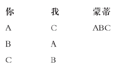
我们必须在A和C之间作出选择，我们选择A：A得分为3，C得分为2，B得分为1。当我们的偏好排序换成如下方式：
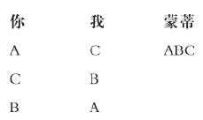
我们必须在A和C之间作出选择，我们选择C：C得分为3，A得分为2，B得分为1。
本例中的问题在于当偏好排序发生变化时，群体在A和C之间的选择发生变化，尽管没有人关于A和C的偏好发生变化：A和C之间的选择取决于我们对于无关选项B的排名。这看来无法让人满意。比如，假设因为暴风雨天气，我们从完整菜单中删去B，那么在博尔达例子的上面两种情况里，A和C之间的选择不同于当B还保留时。（B被删去时，上面两种情况下，最后选择都是A和C：它们各自得分为1。）为避免类似问题，我们可以要求群体关于某两个选项之间的选择只取决于其成员关于这两个选项的个人偏好。同样地，我们可以要求，当某个成员的偏好发生变化但没有影响到这两个选项的排序时，群体关于这两个选项的选择保持不变。这一要求被称为独立条件 。
独立条件看起来是构成规章的最低要求之一。即使独立条件成立，还不能说已经万事大吉。
试考虑略显平庸的字母表法则 ：菜单选项以字母表顺序排列，群体选择在候选列表中排名最高的选项。显然，这一法则满足独立条件。但是，这一法则的问题之一在于它没有对称地对待选项。假定每个人都喜欢U胜过V，且喜欢Y胜过X。那么群体将在U和V之间选择U，但不会在X和Y之间选择Y，尽管每个人都是按照他们对U和V排序的方式对X和Y进行排序。为避免这一问题，我们可以要求，如果每个人对U和V排序的方式与他们对X和Y排序的方式一样，且群体从第一对选项中选择了U，那么也应该从第二对中选择X。这一要求被称为中性条件 。中性条件强于独立条件。从定义可以直接看到，中性条件隐含独立条件。并且如我们所见，字母表法则显示，独立条件并不隐含中性条件。
现在我转向另一类潜在问题。字母表法则还有一个更严重的问题，即它不尊重全体一致：群体将从X和Y中选择X，即使每个人都喜欢Y胜过X。如果我们允许个人偏好起作用，那么当一致偏好出现却不受尊重的时候，就显得很奇怪。为避免这一问题，我们可以要求，如果每个人都喜欢某个选项胜过另一个，那么群体将在两个选项中只选第一个。注意，如果哪怕有一个成员认为两个选项是无差异的，我们就不要求第一个被选中，更不要求只选第一个。这一要求被称为一致条件 。
这一条件看起来是构成规章的最低要求之一。即使它成立，我们也不能完全满意。试考虑帕累托法则 ，得名于经济学家威尔弗雷多·帕累托（1848—1923）：如果所有人都偏好某个选项，且不存在其他选项满足所有人偏好，群体将选择该选项。显然，这一法则满足一致条件。要明白这一法则有什么问题，试考虑下面的例子。
我们选择使用帕累托法则。我们的偏好排序如下：
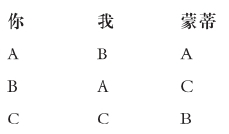
在此排序方式下，我们复选A和B两个选项。如果我们的偏好排序变为：
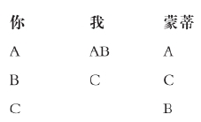
此时我们还是复选A和B。
在本例中可能被认为出错的地方在于，群体选择并没有对个人偏好的变化作出积极反应。在第一种偏好模式下，选项A和B持平。在第二种偏好模式下，相对于A，B在我的排序中上升，而你和蒙蒂的排序保持不变，但A依然被选中。为避免这一问题，我们可以要求：（1）存在某种偏好模式，使得每个选项被选中，且（2）在其他人的偏好排序保持不变，而某个成员的偏好排序中一个选项相对于另一个选项位置上升的情况下，如果群体原先单选第一个选项，它继续单选第一个；如果原先复选两个选项，现在它单选第一个。这一要求被称为响应条件 。响应条件强于一致条件。显而易见，响应条件隐含一致条件；且如我们所见，帕累托法则说明，一致条件并不隐含响应条件。
我们已经有了涉及个人偏好在群体选择中如何起作用的四个条件：中性条件及其弱化形式独立条件；响应条件及其弱化形式一致条件。我将把中性条件和响应条件称为强条件 ，把它们的弱化形式独立条件和一致条件称为弱条件 。这四个条件在逻辑上是一致的：显而易见，多数法则满足全部四个条件。而且，两个弱条件是独立的，两个强条件也一样。很容易找到某个法则满足独立条件但不满足一致条件，或者另一个法则满足一致条件但不满足独立条件。同样地，很容易找到某个法则满足中性条件但不满足响应条件，或者另一个法则满足响应条件但不满足中性条件。
到目前为止，我只讨论了关于规章的第一个问题：它们是否以可接受的方式将个人的偏好结合在一起？我现在来讨论第二个问题：它们列出的选择是否让人满意？我将这样来处理这个问题：我将问，是否它们所作的选择（根据第二章中的定义）是合理的，或者理性的。具体来说，我们是否能概述下列规章的特征：这些规章能满足不同条件，能作出合理的，或者在可能的情况下，理性的选择。
在这么做之前，我将离开主题来简短讨论多数法则（既然它是如此众所周知）：对于某个选项来说，如果将该选项排名最高的人数至少和将其他任何一个选项排名最高的人数一样多，那么群体将选择该选项。如我们所见，多数法则满足强条件。它同时满足另一个要求：人们被对称对待，也就是说，如果两个人交换他们的排序，群体选择将保持不变。这一要求被称为匿名 条件 。确实，多数法则不仅满足这三个条件，而且它是唯一做到这一点的法则。于是，我们得到一个完整的概述：当且仅当一个规章采用多数法则时，它满足中性条件、响应条件和匿名条件。
这一概述也许是完整的，但是它能吸引别人注意吗？答案很清楚，不能。因为这一法则不仅可能无法作出理性的甚至只是合理的选择，它还可能无法作出任何选择。要明白这一点，来考虑下面的例子。
我们选择使用多数法则。当我们的排序如下时：
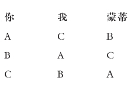
没有我们可以选择的选项：我们中有两人把A列在B之上，所以我们不能选B（无论是单选或是和其他选项一起复选）；有两人把B列在C之上，所以我们不能选C；有两人把C列在A之上，所以我们不能选A。
这不是个小问题：试回想第一章中的讨论，不选择任何选项（与选择某个标明“一无所有”或“现状”的选项正相反）是没有意义的。那么，多数法则可能是空洞的。如果我们需要一个能确保有效的法则（更不用说产生理性的，或者哪怕合理的选择），我们必须进一步考察。
我将从规章产生合理选择的要求开始。我们知道如果我们需要群体选择是合理的，那么我们不能同时要求满足强条件和匿名条件。因为唯一满足这些条件的法则是多数法则，而它是不合理的。那么我们必须放宽某些条件。我将首先来看，如果我们用弱条件替换强条件，会有什么结果，然后再考虑如果我们放弃匿名条件会有什么结果。（我甚至都不考虑放弃弱条件的最低要求。）
要弄清如果我们用弱条件替换强条件会有什么结果，让我们回到帕累托法则：如果所有人都偏好某个选项，且不存在其他选项满足所有人偏好，群体将选择该选项。正如我所提到的，这一法则显然满足一致要求。同样，它显然也满足独立条件和匿名条件。但这一法则合理吗？试回想，第二章中曾提到，如果存在某个“至少一样好”关系使得被选中的选项至少和其他选项一样好，那么选择是合理的（如果这一关系具有传递性，选择就是理性的）。在帕累托法则下，其实存在这一关系：如果每个人都偏好第一个，那么该选项好于第二个；如果两个选项中，没有哪个相对另一个是所有人一致偏好的，那么这两个选项无差异。
我们或许可以注意到在本例中这一关系并非传递性的，所以群体选择不是理性的。要明白这一点，回到帕累托例子，在其中（初始）排序如下：
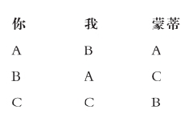
这里我们从A和B两个选项中复选A和B，从B和C两个选项中复选B和C，但只从A和C中单选A。因此，“至少一样好”关系如下：
A和B无差异
B和C无差异
A好于C
显然这不具备传递性。
但是，帕累托法则的确能产生合理选择，并且满足各种条件。其实，反之也成立。我们有了完整的概述：当且仅当产生合理选择的规章采用帕累托法则时，它满足独立条件、一致条件和匿名条件。
要了解如果我们放弃匿名条件但保留强条件会产生什么结果，我将引入“首领”的概念。如果群体总是选择你排名最高的选项，并且只选择你所选的这些选项，除非其他人都将另外一些选项排名最高（在此情况下群体也复选其他人的选择），那么你在该规章下就处于首领位置。具有首领（他必须是唯一的）的规章称为首领制的 。下例说明这样一种制度。
我们选择使用首领制，你是我们的首领。我们的偏好排序如下：
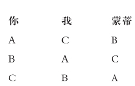
当我们必须在A和B之间选择时，我们选A，因为你将A排名最高，而我们其他两人并没有一致将B列在A之上；当我们必须在B和C之间选择时，出于类似原因，我们选B；当我们必须在A和C之间选择时，我们复选A和C，因为你将A排名最高，而我和蒙蒂都将C列在A之上。当我们必须从完整菜单中选择时，我们选择A，因为你将A排名最高，而我和蒙蒂并没有一致将某个选项列为最优。
注意在本例中群体选择是合理的。“至少一样好”关系如下：
A好于B
B好于C
A和C无差异
但是，这一关系不具备传递性，所以群体选择同样不是理性的。总体来说，由首领制法则规定的选择可能是合理的，但不能保证是理性的。
我们现在可以说明，如果我们保留强条件结果将会如何。情况不容乐观：任何产生合理选择且满足中性条件和响应条件的规章必定是首领制的。
如果我们要求群体选择是合理的（这个要求其实是必须的），我们没有太多余地。如果我们想保留匿名条件（以及弱条件），我们只有采用帕累托法则；如果我们想要保留强条件，我们只有采用首领制法则。帕累托法则在它有效的范围内不容置疑，但它只涉及很小范围：除非是在所有人都一致同意的情况下（这不太可能），否则帕累托法则总是从一对选项中同时复选两者，这没有太大帮助。首领制法则却能应对多数情况：它们总是只选择一个选项。但是，如果你不是首领，你愿意在这样的法则下生存吗？
我现在来考虑如果我们强化要求，把群体选择是合理的，改为是理性的，会有什么结果。要满足这一强化要求，我们不得不放宽强化条件中的一个或者同时放宽两个。因为唯一满足强条件并产生合理选择的制度（即首领制），无法保证产生理性选择。我将做得彻底，用弱条件来代替两个强条件：留给我们的就是作为可接受规章的绝对最低要求。
要了解在此情况下会有什么结果，我将引入独裁者的概念。在某个规章下，如果群体总是恰好选择你排名最高的那些选项，那么你就是独裁者。有独裁者（他必定是唯一的）的规章称为独 裁的 。显然，独裁者是某种首领，但一个首领不一定是独裁者。独裁制规章的例子，最明显的莫过于群体选择总是和你的选择一样的情况：因为你是理性的，这一法则也产生理性选择。
我们现在可以来看，如果我们只要求最低的弱条件，会产生什么结果。情况更糟糕：任何产生理性选择，且满足独立条件和一致条件的规章必定是独裁制的。
这一结果被称为“阿罗不可能定理”，得名于诺贝尔经济学奖得主、哲学家肯尼斯·阿罗（生于1921年）。它被称为不可能定理，因为它可以被解释为规章不可能同时具备四个属性：理性、独立性、一致性和非独裁性。这是选择理论最为根本但也最让人烦恼的结果之一。它暗示，所有关于“国家利益”的言论都是空谈（除非众人一致同意，但这种情况不太可能发生。在一致同意的情况下，不可能定理就是多余的）。
不可能定理和本章所阐述的其他概念之间的联系如下图所示：
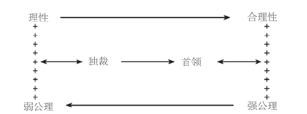
图15群体选择示意图：加号表示结合，双箭头表示对等，单箭头表示隐含
因为不可能定理的中心地位，也为了说明选择理论中所使用的这类论证方式，我将给出证明（仅此一次）。如果对此不感兴趣，你完全可以忽略论证过程，跳到这部分的结尾。
证明包括四个阶段。策略是假定理性、独立性（这一属性只是隐含的）、一致性和非独裁性同时成立，然后说明随之产生的自相矛盾。矛盾意味着不可能同时具备所有属性。
首先，如果群体里存在这样一部分人的集合，每当集合里的人都选择第一个选项，而群体里其余人选择第二个选项时，群体只单选第一个，那么我把该集合称为对这两个选项是有效 的 。我将证明如果某个集合对于一对选项产生有效影响，那么它对所有成对选项都产生有效影响。假定某个集合对于成对选项U和V有影响，试考虑如下偏好排序，包括集合中的所有人和其他所有人：
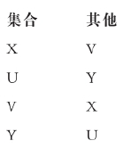
因为一致性，群体从X和U之中单选X；因为集合对于两个选项具有有效影响，群体从U和V之中单选U；因为一致性，群体从V和Y之间单选V。然后，它从X和Y之中单选X，因为选择是理性的。因为集合里所有人都喜欢X胜过Y，而其余所有人都喜欢Y胜过X，这意味着集合对于X和Y具有有效影响。因为X和Y是任意的，所以集合对所有成对选项产生有效影响。
第二，如果群体中存在一部分人的集合，对于所有成对选项，每当集合里的所有人都偏好第一个选项时（不管群体里其他人的偏好），群体在成对选项中都单选第一个选项，那么我将把该集合称为决定性的 。我将证明如果（对于任何成对选项）某个集合是有效的，那么它就是决定性的。假定某个集合是有效的，考虑下列三个选项的偏好排序，包括集合中的所有人和其余所有人：
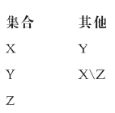
其中X\Z指X和Z可以任意排序。因为集合是有效的，群体在X和Y之间单选X；因为一致性，它在Y和Z之间单选Y。那么它在X和Z之间单选X，因为选择是理性的。既然集合中的每个人喜欢X胜过Z，且其他所有人可以对X和Z任意排序，那么该集合就是决定性的。
第三，我将证明，如果集合不是决定性的，那么向集合中再增加一个人也不会使它变为决定性的。因为只含一个人的集合不可能是决定性的，否则那个人就是独裁者，所以必然存在一些非决定性集合。选择某个这样的集合以及某个不在集合内的人，来考虑以下偏好排序方式，包括集合内的所有人、特定的那个人和其他所有人。
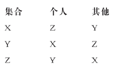
因为那个人不是决定性的，群体不能在Y和Z之间单选Z，因此它在Y和Z之间选Y，但不一定单选。因为集合不是决定性的，群体不能在X和Z之间单选X，因此它在X和Z之间选择Z，但不一定单选。因为群体的选择是理性的，那么它在X和Y之间选择Y，但不一定单选。既然在原始集合增加一个人后所得到的扩大集合中每个人都喜欢X胜过Y，那么扩大集合就不是决定性的。
最后，我将证明存在矛盾。如果我们向非决定性集合中增加足够多次数的个人，我们得到作为一个非决定性集合的整个群体。但是因为一致性，整个群体必然是决定性的。这一自相矛盾的结果说明，不可能同时具备四项属性：理性、独立性、一致性和非独裁性。证毕。
对不可能定理最明显的批评是它没有考虑“偏好强度”：我喜欢X胜过Y和你喜欢Y胜过X被认为是一样的，尽管对我来说是否拥有X无所谓，但对你来说是否拥有Y就是生死攸关的事。这是独立条件所造成的结果之一，即群体在两个选项X和Y之间的选择只取决于个人对于X和Y的偏好。这一条件包括两部分：第一，群体选择并不取决于个人对于X或Y和其他选项之间的偏好排序；第二，除偏好排序以外，它不取决于个人对于X和Y的其他任何态度。特别是，不取决于他们的偏好强度或效用。
在博尔达例子的框架下，我们已经为第一部分作了辩护。在那个例子里，在两个选项之间作选择取决于除了这两个选项，在完整菜单上还有哪些其他选项。但是其他选项是任意的。如果我们不清楚是否有驴子，我们要不要把骑驴旅行列入菜单？我们要不要把借助某种尚待研究的技术进行旅行列入菜单？如果要，我们该如何详细说明这些尚待研究的技术？
表面看来，第二部分似乎无足轻重：我们在第二章中已经知道偏好和效用可以相互转换。如果我们用效用的概念来重新阐释不可能定理而不作进一步限制，该定理继续成立，这一点并不奇怪。但如果我能以某种方式限制效用的概念，使得你的效用和我的效用在某种意义上可以衡量且相互比较，也就是说如果我们把偏好强度纳入讨论范围，那么不可能定理就不再成立。比如，规章可以规定，群体选择使总效用最大化的选项。显而易见，这一选项是理性的，满足一致条件、独立条件的第一部分以及非独裁性。群体选择的这一方法被称为功利主义：“最大多数人的最大幸福。”它最早由哲学家杰里米·边沁（1748—1832）提出。我将在讨论分配公平的部分再回到这一方法。
不可能定理并非群体选择这一领域所获得的唯一分配结果。我将简单介绍另外两个结果，它们分别涉及自由主义和操纵。
自由主义意味着我们每个人都应该有受到保护的领域。比如，在你承诺不和我们其他人讨论任何你所读内容的情况下，在旅途中你想读休谟还是康德，完全取决于你自己。让我们把原来的三个选项飞机、轮船和汽车替换为下列六个选项：
飞机且你读休谟
飞机且你读康德
轮船且你读休谟
轮船且你读康德
汽车且你读休谟
汽车且你读康德
自由主义意味着你将完全独立自主地在选项“飞机且你读休谟”（简称“飞休”）和“飞机且你读康德”（简称“飞康”）之间作出选择。更确切地说，它意味着你对这对选项具有决定性，也就是说，在其他相关成对选项具有相似条件的情况下，如果你偏好“飞休”，群体就选择“飞休”；如果你偏好“飞康”，群体就选择“飞康”。作为最低要求，自由主义至少可以给两个人受保护的领域。（注意，即使在独裁制下，也有一个人有受保护领域。）如果至少有两个人各自对于至少一对选项具有决定性，那么该规章满足自由主义条件 。这其实是最低要求：在确保讨论有意义的情况下，只有最少数的人被要求具有受保护领域，且每个人所获得的都是最小领域。
令人烦恼的结果是，自由主义几乎与其他一切都不相容：没有规章能产生满足一致条件和自由主义条件的合理选择。注意，我们只假定合理性，而不是理性，且只要求具备两个弱条件之一。
第二个让人烦恼的结果在本质上更为实际。众所周知，在选举中人们可能会策略性投票。也就是说，即使他们喜欢左派胜过中间派，他们也可能会投票给中间派以便将右派排斥在外。这样的操纵是否只和特定的选举过程相关？还是说它到处都存在？试回想，规章规定了成员偏好决定群体选择的方式。现在既然出现操纵的可能，我们需要一个类似的概念。投票机制 规定了成员表达出来的偏好决定群体选择的方式；这些表达的偏好可能是真实的，也可能是虚假的。如果对于某个真实偏好的模式来说，在其他人都报告他们真实偏好的情况下，至少存在一个人可以通过报告不同于他本人真实偏好的信息来获得一个更好的选项，这时投票机制便是可操纵的 。（同样，如果根据第五章提出的稳定概念，每个人都表达他们真实偏好的做法是不稳定的，那么投票机制就是可操纵的。）
让人不安的结果是，所有的投票机制都可以有效操纵：确切地说，每个非独裁的投票机制都是可操纵的。注意，甚至不需要弱条件：投票过程本身就有缺陷。
这样，所有的集体选择必定要么是独裁的，要么违背某些最基本的要求；在极端情况下必定是不自由的；且易受到操纵。面对这些糟糕的情况我们该如何作出反应？一个自由论者的反应可能是为个人提供尽可能多的选择，只有在不可避免时才集体作出选择。一个独裁论者的反应可能是将权利交给一个具有家长式作风的独裁者，一个柏拉图式的“哲人王”。第三种反应是关注什么是“正确的”而不是什么是“好的”，前者并不受人们观点的影响，而后者却取决于人们的观点。但这些仅是三种可能的反应。和之前一样，你应该作出你自己的反应。
在结束这一部分之前，我注意到集体选择的形式框架也可以被用来探讨个人选择的某些方面。假设你要选择某种职业：建筑师、银行家或牧师。每个职业中有多项品质是你所关心的：收入、灵活性、满意度。你按照对每种属性的需求度来排列这三项可能的职业，例如：
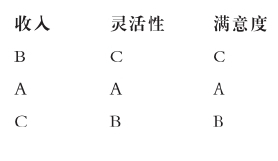
你感觉你的选择应该满足两个要求：第一，你在两种职业间的选择应只取决于这两项的不同排序情况（类似于独立条件）。第二，如果根据所有品质，某项职业排名高于另一项，那么你应该选择该项职业（类似于一致条件）。不可能定理告诉我们，如果你作出理性选择，你将忽略除一项品质外的所有其他品质（类似于独裁性）。同样，这不是个让人满意的结果。
如果把时间纳入考虑，形式上不会产生重大变化。但是，在解释方面，时间因素的介入可能会产生轮流独裁者。不可能定理告诉我们，唯一能够产生理性选择且满足独立条件和一致条件的规章是独裁制。独裁制的问题在哪里？在于独裁者可以压制所有其他人。但如果独裁者不固定，而是无限轮转，结果又会如何：如果今天你当独裁者，明天换我当，这样一直轮换会怎么样？你想要压制我的时候就会很小心，因为你知道我以后也会压制你，风水轮流转。第五章提出的民间定理适用这个例子。在战略选择的框架下，民间定理告诉我们，无限重复将竞争转化为合作；在集体选择的框架下，它告诉我们，无限轮换将压迫性的独裁转化为仁慈的独裁。这样的轮换制的一个例子是欧盟宪法，它规定对会议议程具有实际独裁权的主席按事先约定的六个月任期轮换。注意，在民主制中不可能出现轮换：很多人可能成为独裁者，但只有一个集合能被称为“多数人”。在民主制下，压制少数人总是符合多数人利益的。对乡间运动的禁令就是一个例子。
我现在将回到财富分配的部分。在形式上，我们可以通过把不同的菜单选项阐释为不同的财富分配方式，从而将分配公平的问题用集体选择的框架来表述。但是，作为一种阐释，这将混淆人们的偏好和价值。你的偏好可能是想要实现你自己财富的最大化；而你的价值观则认为财富应该平均分配。集体选择反映人们的偏好；分配公平则期待反映人们的价值观。但是，如果我们真的以这样的方式来阐释分配公平问题，那么不可能定理告诉我们，没有可接受的方法能在不同分配方式之间作出选择：没有理由进行再分配。
不管我们是否把分配公平放在集体选择的框架里进行讨论，两者之间显然存在联系。正如我所提到的，如果我们所使用的效用既可以衡量，又可以进行人际比较，那么不可能定理就不成立。并且，正如我们在之前各章里反复见到的，赞成再分配的观点潜在地或公开地依赖于效用的可衡量性和可比较性：我们应该再分配财富，把你的一部分给我，因为我比你更贫困（罗尔斯的差异原则，见第四章），或者因为我“得到的”比你“失去的”更多（边沁的功利主义）。正如经济学家肯尼斯·宾默尔（生于1940年）所指出的：
也许为取得可衡量、可比较的效用所作的最合乎逻辑的尝试是理想观察者的构想 。这归功于约翰·海萨尼，我们在第五章已经提到过他。想象一下，你身处第四章所提到的无知面纱的背后，也就是说你处于“原初状态”。你知道候选菜单上有哪些选项，但你不知道自己的角色。比如，你知道整个群体将以乘飞机、轮船或汽车的方式去旅行，但不知道你将身处你自己、我还是蒙莫朗西的位置。在面纱背后你对选项-角色对 具有偏好，也就是说，对于选项和角色的结合具有偏好。这意味着你可以比较“乘飞机旅行且扮演你自己的角色”（简称“飞你”）和“坐船旅行且扮演我的角色”（简称“船我”），依此类推：你可能喜欢“飞你”胜过“船我”，或者喜欢“船我”胜过“飞你”，或者觉得两者无差异。这些偏好是你的移情偏好 。它们和你本人的偏好不同，后者只是就坐飞机、船或汽车旅行作简单比较。
尽管你不知道你将身处的角色，但你知道可能性有多大。那么既然你是理性的（根据第三章的定义），你为角色和基础效用指派概率，来代表你对选项-角色对的移情偏好。比如，你可能指派基数效用如下：
飞你 4
飞我 2
船你 1
船我 0
你指派给“飞你”的效用大于“船你”的效用，我们可以将效用差额解释为你从乘船旅行改为乘飞机旅行所获得的额外效用，其余效用差异依此类推。在本例中，你从乘船旅行改为乘飞机旅行所获得的额外效用（等于3）大于我作类似转变时所获得的额外效用（等于2）。这可能反映了这样的事实，即你晕船，而我不会。此外，正如我们从第三章的讨论中已经知道的，不管你怎样指派基数效用，你的额外效用都大于我的。看起来似乎我们已经可以用某种有意义的方式来比较你我的效用。
但是，我们还做不到这一步。我们刚才进行的人际效用比较实际是你的比较：它源自于你的移情偏好。蒙蒂的比较可能完全不同：基于他的移情偏好，你的额外效用可能少于我的。为克服这一问题，我们必须求助于海萨尼信条，我们在第五章已经遇到过。这一信条声称，具有相同信息和经验的两个人必然以同样方式行事。在面纱背后，你和我具有相同的信息，且都被剥夺了所有经验。相应地，我们具有相同的移情偏好，因此作出相同的人际比较。最后，我们得以用某种有意义的方式对你我的效用进行比较。我们可以使用这一信息摆脱不可能定理的束缚；我们还可以用它来为财富再分配辩护。
更确切地，我们可以说，总效用将可以通过以下财富再分配方式来增加：把财富从那些具有低边际效用的人（通常被认为是富人）转到那些具有较高边际效用的人（通常被认为是穷人）手里。在这种情况下，财富再分配不会造成总财富的变化。（至于这是否得到任何伦理支持则是另一回事。）但是，我们到目前为止还不能讨论更为有趣的情况，即不同的财富分配方式涉及不同的财富总额。这种情况可能出现在财富分配需要我们参与以及一些分配方式相比另外一些能为我们的参与提供更多激励的时候。为了更好地说明这种情况，我们必须进一步来讨论。
我们必须作出两个进一步的假定。第一，你认为每个角色都以均等概率出现。这意味着，如果有n个角色，你指派给其中每一个的概率就是1/n。第二个假设被称为接受原则 ，即当你身处我的角色时，你对于这些选项-角色对的移情偏好和我对于相应选项的个人偏好是完全一致的：比如，当且仅当我喜欢“飞机”胜过“轮船”的时候，你喜欢“飞我”胜过“船我”。
在无知面纱背后，你作出理性选择（根据第三章中的定义）：你选择能使你的期望效用最大化的选项。在计算时，相关的概率是指派给每个角色的概率，相关的效用则是在通常移情偏好下指派给每个选项-角色对的效用。因为第一个假设，这些概率都是1/n。因为第二个假设，我们可以用每个人在具备相关角色下的个人偏好时指派给每个选项的效用来代替这些效用。那么期望效用最大化就意味着总（个人）效用乘以1/n，这和总效用最大化是一样的。这就是功利主义：财富分配应使总效用最大化。
对这一构想一个直接的批评在于，选择是可观察的（至少在原则上），但偏好不是：你通过问自己在两个选项之间会选择哪一个来决定你对它们的偏好。即使是在思维实验里，也不清楚你将如何在“乘飞机旅行且身处你自己的角色”和“乘船旅行且身处我的角色”之间作出选择。与此相关，海萨尼信条很难得到证实。为什么不能是这样：不管你身处哪个角色，你喜欢乘飞机旅行胜过乘船（比如，因为航空业创造更多就业机会）；而不管我身处哪个角色，我喜欢乘船旅行胜过乘飞机（比如，因为船产生更少污染）？
我们也可能注意到，即使有理由支持财富再分配，使得财富从具有低边际效用的人转到具有高边际效用的人那里，这本身并不能支持从富人到穷人的财富再分配。如果富人具有更高边际效用（比如，因为极度贪图奢华，或者像瑞顿一样对海洛因上瘾），这将要求从穷人到富人的再分配。
而且，即使这一构想理由充足，它也只能用于研究人们选择什么以及什么是“好的”，而不能用于研究什么是“对的”。某个再分配方案将增加效用这一事实（如果确实存在的话），本身并不能为财富从你那里转到我这里提供任何伦理支持。另一个立场我们在第四章已经遇到过：如果一种分配是自愿行为的结果，而不是出于其他任何理由，那么它就是公正的。
如我们所见，宾默尔是理性观察者构想的支持者。在对此进行仔细审视之后，他总结道：
如果存在某个“社会中现存的测量意见一致性的方法”，那么就不需要作人际比较；如果不存在这样的方法，那么在为人际比较作辩护时，构造理想观察者的做法帮助不大。［我们顺便提一下，如果宾默尔在这两点上都对了，那么“伦理学（就是）一门缺乏实质内容的学科”。］
你必须对理想观察者这一争议话题持有自己的观点。如果你感到满意，那么不可能定理就不再成立；而且，也有理由进行再分配。如果你不准备接受这一点，那么要么你得找到更好的证据为人际比较提供支持；要么你就接受不可能定理，忘记再分配。
最后，注意本书中对分配公平的讨论只关心选择理论是否能为再分配提供支持。理论为再分配提供很少支持这一事实并不意味着没有其他支持再分配的论证（尽管事实上大多数严肃的试图支持再分配的尝试都基于选择理论）。此外，本书中的讨论只关心强制再分配：它没有涉及自愿再分配的任何内容。回到我们在第一章中的起点，“选择我自己遭受惨痛损失以避免一个印第安人最轻微的不便，这样做并非违背理性”。
群体选择研究规章的属性。所谓规章，指的是成员偏好在决定群体选择时起作用的方式。
独立条件要求，在个人偏好发生变化但个人对于两个选项的偏好排序不发生改变时，群体在这两个选项间的选择不发生变化。
中性条件要求，如果每个人对选项U和V排序的方式和它们对选项X和Y排序的方式是一样的，且群体从第一对中选择U，那么它也将从第二对中选择X。
一致条件要求，如果每个人都喜欢第一个选项胜过第二个，那么群体从两个选项当中单选第一个。
响应条件要求，（1）存在某种偏好模式，使得每个选项都被选中，并且（2）如果在其他人的偏好排序不变的情况下，某个人的排序中第一个选项相对于第二个选项排名上升，那么如果群体本来选择第一个选项，它就继续选择第一个；如果本来复选两个选项，它现在单选第一个。
中性条件强于独立条件；响应条件强于一致条件。
如果群体总是选择某个特定的人（首领）排名最高的选项，且只选择这些选项，除非其他所有人都将另一些选项排名最高（在这种情况下，群体也将选择另外这些选项），那么该群体所用的规章就是首领制的。
任何产生合理选择，且满足中性条件和响应条件的规章必定是首领制的。
如果群体总是严格选择某个特定个人（独裁者）排名最高的选项，那么该群体所用的规章就是独裁制的。
任何产生理性选择且满足独立条件和一致条件的规章必定是独裁制的。